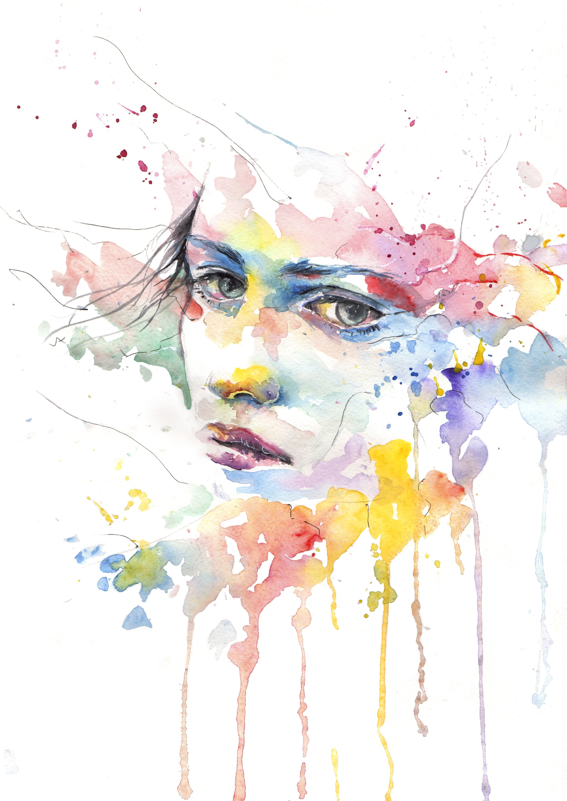
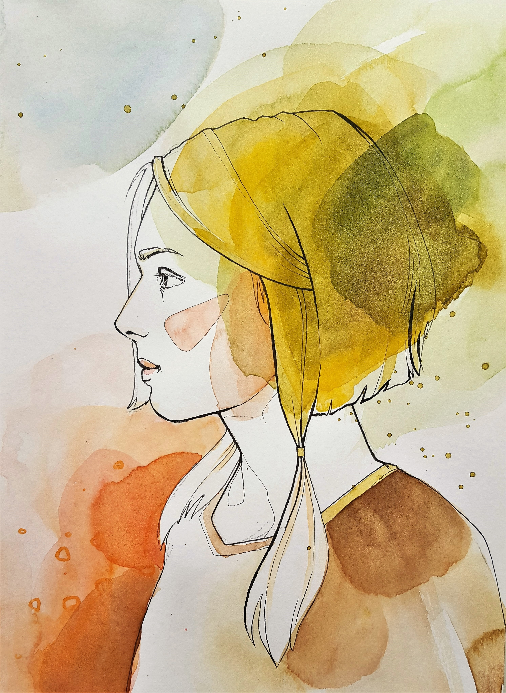
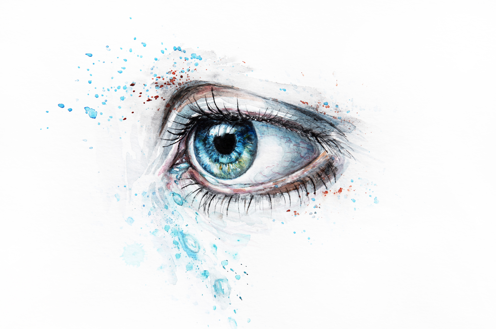

Watercolors
Watercolor paint is an ancient form of painting, if not the most ancient form of art itself.
In East Asia, watercolor painting with inks is referred to as brush painting or scroll painting.
In Chinese, Korean and Japanese
painting it has been the dominant medium, often in monochrome black or browns, often using inkstick or other pigments.
India, Ethiopia and other countries have long watercolor painting traditions as well. Many Western artists,
especially in the early 19th century, used watercolor primarily as a sketching tool in preparation for the "finished" work in oil or engraving.[15] Until the end of the eighteenth century, traditional watercolors were known as 'tinted
drawings'.
Some Watercolor ArtWorks
  
The conventional and most common support — material to which the paint is applied—for watercolor paintings is watercolor paper.
Other supports or substrates include stone, ivory, silk, reed, papyrus, bark papers, plastics, vellum,
leather, fabric, wood, and watercolor canvas (coated with a gesso that is specially formulated for use with watercolors).
Watercolor paper is often made entirely or partially with cotton. This gives the surface the appropriate
texture and minimizes distortion when wet.
Watercolor papers are usually cold-pressed papers that provide better texture and appearance with a weight at least 300 gsm.
Under 300 gsm is commonly not recommended for anything
but sketching.
Transparency is the main characteristic of watercolors.
Watercolors can also be made opaque by adding Chinese white.
This is not a method to be used in "true watercolor" (traditional).